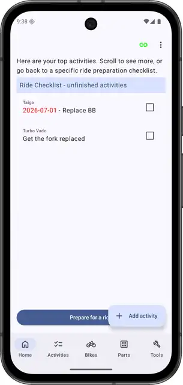

J-K Bike - Mechanical Disaster Prevention Pro
صحة ورياضة
We have all experienced those rides where something mechanical happens that really was preventable. As the authors, even though we take a certain pride in our own efforts in maintaining smooth running MTBs, and a disdain for our riding buddies who never give a passing thought until something goes 'C
✓ ترخيص مفتوح (EUPL-1.2) · آخر تحديث: 2026-06-21
4.2.1الإصدار
5.7 MBالحجم
EUPL-1.2الرخصة
Open in Kanzتحميل APK (5.7 MB)
Download APK
SHA-256: 525a763ce423c1827c420888b97012b479801f6526fe8f798e7b1cddd7f4e725

تطبيقات تانية لنفس المطوّر (6)
More apps from this developer: com.exner
امسح الكود لفتح صفحة التطبيق
Scan to open this app page
لو كنز مش متثبت عندك: نزّل متجر كنز.
Not installed? Get the Kanz store.